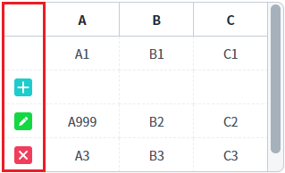
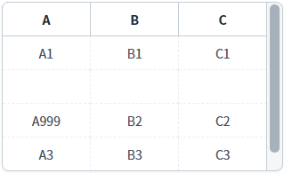
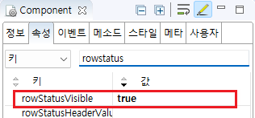

GridView의 'rowStatusVisible' 속성을 사용하여, 행의 상태 컬럼을 표시한 예제입니다. 행 상태는 DataList의 컬럼 rowStatus에 할당 된 값에 따라 아이콘이 할당됩니다. R : 초기 상태, C : 추가, U : 수정, D : 삭제
행 상태 표시
행 상태 미표시
행의 상태별 아이콘을 확인하기 위해 화면 로딩 후 스크립트(행 추가, 행 삭제, 값 변경)가 작성되었습니다.
1
실행 결과를 확인합니다.
첫 번째 컬럼에 행의 상태 컬럼이 표시되고 행의 데이터 상태에 따라 이미지가 표시됩니다.
첫 번째 행은 초기 상태로 이미지가 표시되지 않습니다.
두 번재 행은 추가 상태로 추가 상태 이미지가 표시됩니다.
세 번재 행은 수정 상태로 수정 상태 이미지가 표시됩니다.
네 번째 행은 삭제 상태로 삭제 상태 이미지가 표시됩니다.
다섯 번째 행은 초기 상태로 이미지가 표시되지 않습니다.
DataList 'dlt_exam'의 'rowStatus' 컬럼의 값에 따라 아이콘이 할당됩니다. R : 초기 상태, C : 추가, U : 수정, D : 삭제
Image 1.브라우저(Chrome) 실행 예시

Example 1.GridView와 연결된 DataList의 JSON 데이터
[
{ "col_a": "A1", "col_b": "B1", "col_c": "C1", "rowStatus": "R" },
{ "col_a": "", "col_b": "", "col_c": "", "rowStatus": "C" },
{ "col_a": "A999", "col_b": "B2", "col_c": "C2", "rowStatus": "U"},
{ "col_a": "A3", "col_b": "B3", "col_c": "C3", "rowStatus": "D" },
{ "col_a": "A4", "col_b": "B4", "col_c": "C4", "rowStatus": "R" }
]예제 영역 '(기본 설정) 행 상태 미표시'에 구성된 GridView에서 테스트합니다.1
실행 결과를 확인합니다.
행의 상태 컬럼이 표시되지 않습니다.
Image 2.브라우저(Chrome) 실행 예시

1
GridView의 속성을 정의합니다.
[필수] rowStatusVisible="true"
[default:false, true] 행의 상태 컬럼 표시 여부
Image 3.웹스퀘어 스튜디오의 Component View - 속성 설정 예시

Example 2.Source
<!-- gridView 의 소스 본문 예시 --> <w2:gridView rowStatusVisible="true"> <!-- 중략 --> </w2:gridView>
rowStatusVisible